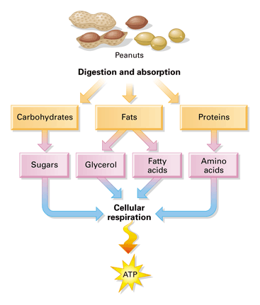

How Your Body Turns Food Into Energy
October 6, 2026 by Jaekwon Green

Metabolism is the set of chemical reactions that keep your body alive. When you eat, your digestive system breaks food down into smaller molecules: carbohydrates become glucose, proteins become amino acids, and fats become fatty acids. These molecules travel through your bloodstream to your cells, where they are used as fuel or as building blocks for growth and repair.
Inside your cells, tiny structures called mitochondria convert that fuel into a molecule called ATP, which acts like a rechargeable battery for the body. Your basal metabolic rate is the amount of energy you burn just to stay alive, powering your heartbeat, breathing, and body temperature even while you rest. Factors like age, muscle mass, sleep, and physical activity all influence how quickly your body uses energy each day.